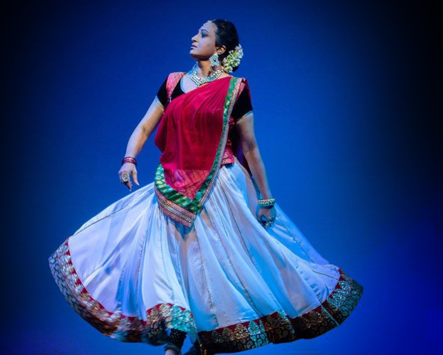
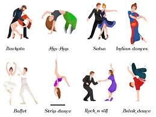

Jazz Talent Scout
Bhangra Dance
Bhangra refers to several forms of folk dance and music that originate in the Punjab region of India. The dance is generally performed during the Vaisakhi festival that celebrates the harvest. Bhangra has a very energetic and lively tone and the dance is equally vivacious. The festival is celebrated with much pomp and fervor and the dresses worn by the male and female dancers are quite different from each other although both are a reflection of the joyous celebrations.
History The Bhangra is said to have started by Punjabi farmers in the 14th or 15th century to celebrate the harvest season. As time progressed, the Bhangra became used in almost all major celebrations in Punjab such as weddings or festivals. The Bhangra is danced to the rhythm of a drum, known as the dhol. One of the other accounts of its origin dates it to the 1880s as a community dance in the month leading up to the Vaisakhi festival. While the dance has now spread to not just Punjab in its entirety, but India and many parts of the world, at the time of its origin it was prominent only in Gujranwala, Sialkot, Gurdaspur and Sheikhpur areas of Punjab.
Style and Variety The Bhangra dress is quite vivid and colorful and is quite similar to the clothes worn every day in Punjab although the hues of the clothes worn on a daily basis are lighter. The style of clothing worn by men when performing Bhangra is different than the type of clothes worn by women. However, they share certain similarities such as color and fabric. Variety in Color Schemes The performers both men and women wear bright colors, as already mentioned. However, it is essential to note that many-a-times the top wear can be in a completely different color from the bottom wear. Moreover, it is not necessary that all the men in the performing group or all the women in the group stick to a uniform color scheme. It is possible for all individuals within the performing group to wear different colors and still add to the vividness and vibrancy of the dance. Global Influence The influence of Bhangra can be easily seen in Bollywood, however, it has reached a far wider audience. Moreover, the traditional moves of the Bhangra have been taken to global platforms like America’s Got Talent along with these vibrant costumes, without which Bhangra wouldn’t be what it is. The costumes help the larger audience identify the dance even before the performance has started. Folk Dances of Punjab More folk dances of Punjab Giddha, Jhumar, Luddi, Dhamal, Sammi, Jaago, Teeyan, Dankara, Kikli, Gatka, Malwai Giddha, Jalli Bhangra Dance Videos Bhangra Dance is one of the most famous folk dances of Punjab. Here is the Bhangra Dance Videos. Sources of Inspiration The dresses that are worn during a Bhangra performance are very bright, bold and colorful to symbolize the joyful and celebratory nature of the occasion. Since there is a lot of movement associated with this dance form, it is very important that the dresses allow the dancers to move freely. This is why the clothing worn by the dancers are loose fitting so as to ensure that body movement isn’t constricted. Bright shades generally mean different things. For example, Yellow is used to symbolize sarson or mustard, green symbolizes prosperity and red/saffron symbolize the auspicious occasion itself. The wearing of the turban by male dancers is very important as it represents the pride as well as honor of the people of Punjab. Women wear long flowing clothes as well as fine jewelry for elegance and grace.Kathak
Kathak is one among the eight Indian classical dance forms. The word 'Kathak' has its origins from the Sanskrit word Katha which means story. Kathak is an amalgamation of three arts- music, dance and drama. Both Hindu and Muslim rulers patronised this dance form giving it the status of a court entertainment. As such, this classical art carries with it the quaint charm of folk arts and is a blend of Hindu and Muslim traditions. Kathak originated in the villages of Northern India, when the natives shared their life experiences with each other. These people or Kathakkars (storytellers) travelled from village to village and kingdom to kingdom spreading their art. These Kathakkars would occasionally stop at the temples in these regions to take rest and here they began to enact stories from the great Indian epics and also started to stylise the art by giving it a classical touch. The Pandits in the temples encouraged these Kathakkars to narrate the stories from the great epics like Mahabharata, Ramayana, Puranas and the Vedas. The Pandits thus set the foundation for Kathak's transformation into a temple dance where it focused on mythology, gods and goddesses. With the entry of Mughals, who looted the assets from the temples, these Kathakkars also found themselves being absorbed into the Mughal courts. The focus of worship also changed and primary importance was given to the appeasement of the Emperor. The changes that came with the establishment of the Mughal Empire were also mirrored in Kathak. Manuscripts, music, jewellery, costumes and techniques of the dance also evolved and underwent rapid changes. Urdu language was introduced into the art form. However, the ingress of the British into the scenario forced the renowned dancers of the Mughal Era to abandon their profession as dance as an art form was forbidden by the rulers. As there was no other way to preserve this unwritten and unrecorded art form, these artists initiated home tutoring by teaching their own family members in an attempt to preserve the heritage of this historic art form. Thus emerged the concept of 'Gharanas'. The word 'Gharanas' is derived from the word 'ghar' meaning home. Three Gharanas Kathak survived and developed over the years as an oral tradition and was passed on from generation to generation or guru to shishya through performances. This traditional way of imbibing knowledge through the guru shishya parampara enabled the preserving of this art form. Kathak evolved into three main schools of thought- Lucknow, Jaipur and Benares forms.Held within a well defined system of artistic values, these gharanas exhibited prominent features that made them unique. Jaipur focused more on warrior like movements introducing Parans and Kaviths. Aggressive movements, sharp foot work and spins are some of the specialties of the Jaipur gharana. Lucknow gharana dealt with delicate movements, culture, romance, ethos and sringar. Gazals, amass, gabs are a few picluriarites of this gharana. The Banaras gharana which emerged from the banks of the River Ganga focused more on the spiritual aspects. Tumris based on 'bol banana' was the specialty of the Banaras gharana. Bhajans too. The three gharanas had their own unique style and built their own repertoire which is now being passed on through the guru shishya parampara Post independence Post independence, our leaders realised that the legacy that was passed on over generations needed to be nurtured. The gurus were exhorted to pass the knowledge on to the younger generation and thus this acceptance injected a new vigour into this remarkable art form and Kathak regained its glory.
Western Dance
The peoples of the West—of Europe and of the countries founded through permanent European settlement elsewhere—have a history of dance characterized by great diversity and rapid change. Whereas most dancers of the East repeated highly refined forms of movement that had remained virtually unchanged for centuries or millennia, Western dancers showed a constant readiness, even eagerness, to accept new vehicles for their dancing. From the earliest records, it appears that Western dance has always embraced an enormous variety of communal or ritual dances, of social dances enjoyed by many different levels of society, and of skilled theatrical dances that followed distinct but often overlapping lines of development.
The article folk art covers in greater detail the unique nature, techniques, forms, and functions, and the historical developments of each of these kinds of Western dance. In addition, the article dance covers the aesthetics and the varieties of dance, both Western and non-Western.
From Antiquity Through The Renaissance Before written records were left, a vast span of time elapsed about which scholars can only speculate. Pictorial records in cave paintings in Spain and France showing dancelike formations have led to the conjecture that religious rites and attempts to influence events through sympathetic magic were central motivations of prehistoric dance. Such speculations have been reinforced by observation of dances of primitive peoples in the contemporary world, though the connection between ancient and modern “primitives” is by no means accepted by many scholars. If the dances recorded in early written records represented a continuity from prehistoric dances, there may have been prehistoric work dances, war dances, and erotic couple and group dances as well. One couple dance surviving in the 20th century, the Bavarian-Austrian Schuhplattler, is considered by historians to be of Neolithic origin, from before 3000 BC.